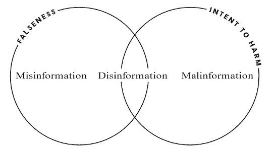
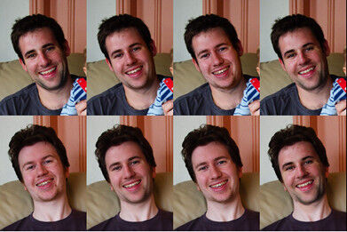
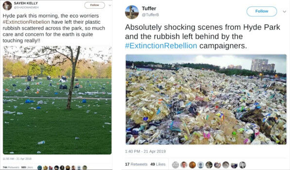
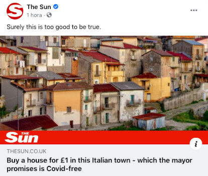

Trainees Edition
Trainers Edition
Trainees Edition
Trainers Edition
2.nodarbība: informācijas traucējumi
Nodarbības apraksts
Šīs nodarbības galvenais mērķis ir iepazīstināt ar informācijas traucējumu konceptiem, lai palīdzētu studentiem atpazīt dažādu veidu informācijas traucējumus, ka arī uztvert tos analītiski un kritiski.
Nodarbības sekundārais mērķis ir sniegt vadlīnijas pasniedzējiem, kuri vēlas izmantot nodarbības saturu, lai mācītu savus studentus.
Šie mērķi palīdz atklāt galvenās kategorijas un biežākos informācijas traucējumu tipus, kā arī vadlīnijas ka mācīt priekšmetu.
Studenti, kuri būs sekmīgi apguvuši šo nodarbību, spēs:
- atpazīt informācijas traucējumus;
- definēt, identificēt un noteikt galvenās informācijas traucējumu kategorijas (misinformacija, dezinformācija un kaitnieciska informācija);
- definēt, identificēt un noteikt galvenās informācijas traucējumu tipus (satura manipulācija, viltus saturs, safabricēts saturs).
Pasniedzēji, kuri būs sekmīgi apguvuši šo nodaļu, spēs izprast kā mācīt par informācijas traucējumiem.
Nodarbības struktūra
Nodarbība sastāv no šādām daļām:
- nodarbības apraksts (mērķi, satura izklāsts un mācību rezultāti),
- nodarbības struktūra;
- vadlīnijas studentiem;
- vadlīnijas pasniedzējiem (kā sagatavoties; izmantojamās metodes; ieteikumi);
- saturs (mācību materiāli un vingrinājumi);
- tests;
- informācijas resursi (izmantotie avoti, ieteicamie avoti un video).
Galvenie nodarbības mērki, satura izklāsts un mācību rezultāti ir raksturoti nodaļas apraksta daļā. Saturs ietver visus mācību materiālus un ar to saistītos uzdevumus. Tests sastāv no jautājumiem ar atbilžu variantiem, tas palīdzēs studentiem novērtēt savu progresu. Avoti sastāv no izmantotājiem avotiem un ieteicamajiem avotiem tālākai pētniecībai. Izmantotie avoti ir to materiālu saraksts, kas tikusi izmantoti mācību materiāla sagatavošanā. Ieteicamie avoti sastāv no papildu avotiem un video, kas ir ļoti ieteicami, lai uzzinātu vairāk par nodaļas tematu. Vadlīnijas studentiem iekļauj instrukcijas un ieteikumus studentiem. Vadlīnijas pasniedzējiem palīdz pasniedzējiem dažādās mācību procesa fāzēs un sniedz noderīgus ieteikumus.
Vadlīnijas studentiem
Studentiem jāizlasa teksts, jānoskatās rekomendētie video un jāizpilda vingrinājumi. Vēlams ieskatīties ieteicamajos avotos, lai uzzinātu vairāk par tematu. Pēc iepazīšanās ar nodarbības saturu, ieteicam veikt testu, lai novērtētu savu progresu. Ja nepieciešams pārskatīt mācinbu materiālu vēlreiz.
Vadlīnijas pasniedzejiem
Vadlīnijas pasniedzējiem ietver ieteikumus un padomus, kā izmantot šīs nodarbības saturu macību procesā par informācijasa traucējumiem.
Sagatavošanās
Ieteicams sagatavot prezentāciju (PowerPoint/Prezi/Canva) par nodaļas tēmu, kas papildināta ar vizuāliem materiāliem (attēli un videoklipi) un uzskatāmiem piemēriem. Ieteicams arī pielāgot šīs nodaļas piemērus un vingrinājumus, lai tie ir piemēroti mērķauditorijai. Vietējo piemēru izvēle (konkrētā valstī) saistībā ar pašreizējām vai labi zināmām problēmām palīdz skaidrāk ilustrēt jautājumu. Tas arī palīdz pievērst studentu uzmanību. Jo pazīstamāki un populārāki būs piemēri, jo labāk tiks nodots vēstījums. Vietējās (valsts) faktu pārbaudes platformas var būt labs avots to ziņu vai gadījumu izpētei, kas jau ir pārbaudītas un marķētas.
Nodarbības uzsākšana
Studentu iesaistīšanai var noderēt īss tests (3–5 jautājumi), izmantojot platformu Kahoot, vai atsevišķu jautājumu uzdošana, izmantojot Mentimeter. Jautājumi var kalpot gan kā motivējošs instruments, gan kā rīks, ar kura palīdzību iespējams apzināt studentu esošās zināšanas un izpratni par nodarbības tēmu. Daži jautajumu piemēri: Kas ir dezinformacija? Kas ir misinformācija? Kas ir viltus saturs?
Izmantojamās metodes
Mācību procesā var tikt izmantotas dažādas metodes, piemēram:
- Lekcija
- Diskusija
- Darbs grupās
- Pašrefleksija
Ieteikumi pasniedzējiem
Iesildīšanās
Lai efektīvi iesaistītu dalībniekus mācību procesā un vienotos par to, kas tiks apgūts nodarbības laikā, tās sākumā var iesildošus uzdot jautājumus par tematu informācijas traucējumi. Tas var tikt organizēts kā grupu darbs, lūdzot studentiem apkopot un pārrunāt idejas, vai arī individuāli, aicinot katru dalībnieku uzrakstīt savas idejas uz līmlapiņas.
Aktivitātes soļi:
- Lūgt studentus nosaukt informācijas traucējumu piemērus;
- Aicināt studentus kategorizēt nosauktos piemērus un paskaidrot kā tie atšķiras;
- Aicināt studentus identificēt jomas, kurās novērojama dezinformācija (piemēram, politika, ekonomika, veselība, tehnoloģijas, sociālie jautājumi, izklaide, slavenības un citi);
- Pajautājiet studentiem vai viņi ir saskārušies ar dezinformāciju un kādā formā (video, raksti, ziņas un citi);
- Pajautājiet studentiem, kā viņi atšķir nepatiesu informāciju;
- Pajautājiet studentiem, cik bieži viņi domā, ka saskaras ar dezinformāciju.
Pēc diskusijas pārliecinieties, vai studenti spēj atšķirt apzinātu un netīšu nepatiesas informācijas izplatīšanu (noteikt atšķirību starp dezinformāciju un misinformāciju). Studentiem jāizprot, ka viņu izpratnes līmenis vai faktiskums (pakāpe, kādā viltus ziņas balstās uz faktiem), var atšķirties.
Nodarbības mērķa paskaidrošana
Nodarbības mērķim jābūt skaidram, šajā gadījumā tas ir konceptualizēt dezinformāciju kā parādību, kas ietekmē mūsu dzīvi un lēmumu pieņemšanu. Pēc iesildošajiem jautājumiem būs vieglāk izskaidrot nodarbības mērķi.
Nodarbības satura izklāsts
Izklāstot nodarbības saturu, noteikti komunicējiet ar studentiem un mudiniet viņus aktīvi iesaistīties.
- Pirms iepazīstiniet ar dezinformācijas definīciju, lūdziet studentiem formulēt savu.
- Iepazīstinot ar izplatītākajiem informācijas traucējumu veidiem, lūdziet dalībniekus piedāvāt reālas dzīves piemērus. Sniedziet komentārus par piemēriem neatkarīgi no tā, vai tie pieder kategorijai, par kuru runājat.
- Sniedzot piemērus, izvēlieties reālās pasaules piemērus. Un izpētiet pēc iespējas vairāk informācijas par savu piedāvāto piemēru, lai pēc studentu lūguma jūs varētu paskaidrot sīkāk.
- Izvēloties piemērus, pārliecinieties, ka tie pilnībā atbilst tās kategorijas definīcijai, par kuru tiek runāts. Daži piemēri var ietvert vairāk kā vienu kategoriju, tas iesācējiem varētu būt mulsinoši.
- Izvēloties piemērus no sociālajiem medijiem, noteikti norādiet sākotnējo ziņu ar reakcijām (patīk; dalīties), lai varētu demonstrēt efekta lielumu.
- Sniedziet dažus piemērus (tie var būt arī izdomāti scenāriji) ar detalizētu informāciju un lūdziet dalībniekus izlemt, kāda veida informācijas traucējumi tie ir.
- Pēc iepazīstināšanas ar informācijas traucējumu veidiem, lūdziet studentiem iedalīt šos veidus trīs galvenajās kategorijās (dezinformācija, misinformācija, kaitnieciska informācija) kā nākamajā piemērā.

Avots: Humprecht, Esserl & Van Aelst, 2020, lpp. 495
Noslēgums
Sniedziet nodarbības kopsavilkumu un uzdodiet dažus jautājumus, kas palīdzētu izcelt būtiskāko satura izklāstā. Sekojošie jautājumi var palīdzēt:
- Lūdziet studentiem aprakstīt informāciju, ar kuru viņi ir saskārušies tiešsaistē un kas sākotnēji šķita patiesa, bet vēlāk izrādījās nepatiesa.
- Pajautājiet studentiem, vai viņi kādreiz ir dalījušies ar nepatiesu informāciju un pēc tam to sapratuši.
- Pajautājiet studentiem, cik ļoti, viņuprāt, viņus ietekmē dezinformācijas izplatība.
- Pajautājiet studentiem, ja kāds neapzināti izplata nepatiesu informāciju, vai šai personai ir tāda pati atbildība par sekām kā personai, kas apzināti izplata dezinformāciju.
Saturs: informācijas traucējumi
Ievads
Tā kā jēdziens “viltus ziņas” neaptver visu maldinošo saturu (daži no tiem pat nav viltoti), tika ieviests jauns jēdziens, ko sauc par “informācijas traucējumiem”. Informācijas traucējumi ir ļoti sarežģīta parādība. Daži to veidi ir mazāk kaitīgi un tos varētu raksturot kā zema līmeņa informācijas piesārņojumu, savukārt citi ir sarežģītāki un dziļi maldinoši (Wardle & Derakhshan, 2017, p. 20; Wardle, 2019, p. 57; Wardle, 2020).
Informācijas traucējumu sadalīšana kategorijās palīdz labāk izprast mūsdienu informācijas ainavu. Šajā modulī ir aprakstītas galvenās kategorijas un dažādi informācijas traucējumu veidi.
Informācijas traucējumu galvenās kategorijas
Ir trīs galvenās informācijas traucējumu kategorijas, proti, misinformācija, dezinformācija un kaitnieciska informācija. Atšķirības starp šīm trim kategorijām raksturo kaitējuma un nepatiesības apmērs (Wardle & Derakhshan, 2017, p. 20; Wardle, 2020). Ir svarīgi atšķirt ziņas, kas ir patiesas, no tām, kas ir nepatiesas, un ziņas, kas ir radītas, ražotas un/vai izplatītas ar ļaunu nodomu, no tām, kas tādas nav (Wardle & Derakhshan, 2017, p. 20).

Avots: Wardle, 2019, p. 9 lpp. 495
Dezinformācija
Dezinformācija ir saturs, kas ir apzināti nepatiess un tiek izplatīts, lai radītu kaitējumu (Wardle, 2019, p. 8; Wardle & Derakhshan, 2017, p. 20). Safabricēts vai apzināti manipulēts audiovizuāls saturs, tīši radītas sazvērestības teorijas vai baumas ir daži šīs kategorijas piemēri (Staats, 2021).
Piemērs: Vai Francijas prezidents Emanuels Makrons atvēra ārzonas bankas kontu?
Tieši pirms 2017.gada Francijas prezidenta vēlēšanām sociālajos medijos izplatījās baumas, ka Emanuelam Makronam (Emmanuel Macron) (toreiz kandidātam) ir slepens ārzonas konts Bahamu salās. Tiešsaistē izplatītie dokumenti, piemēram, līgums ar banku (tostarp Makrona paraksts un bankas kontaktinformācija), izrādījās izdomāti. Šo jau atmaskoto ziņu mērķis bija atturēt franču vēlētājus no balsošanas par Makronu (CrossCheck, May 5, 2017; Wardle & Derakhshan, 2017, p. 21).

Misinformācija
Misinformācija ir nepatiesa informācija, kas tiek izplatīta, bez nodoma radīt kaitējumu. Ja dezinformāciju izplata persona, kura neapzinās, ka tā ir nepatiesa vai maldinoša, tā kļūst par misinformāciju (Wardle & Derakhshan, 2017, 20. lpp.; Wardle, 2019, 2019, 8. lpp.). Šajā kategorijā tiek ņemtas vērā arī nejaušas kļūdas, piemēram, neprecīzi fotoattēlu paraksti, datumi, statistika, tulkojumi. Pat satīra var kļūt par dezinformāciju, ja to uztver nopietni, (Staats, 2021).
Piemērs: Vai Londonas musulmaņi "svinēja" teroristu uzbrukumu Parīzē?
Īsi pirms 2017.gada valsts prezidenta vēlēšanām Elizejas laukos ISIS kaujinieks sašāva trīs Francijas policistus un tūristu. Viens policists tika nogalināts, bet pārējie tika smagi ievainoti. Šis uzbrukums Parīzē iedvesmoja lielu daļu misinformācijas, kā tas notiek gandrīz visās jaunāko ziņu situācijās (CrossCheck, 2017. gada 22. aprīlis; Wardle & Derakhshan, 2017, 21. lpp.).
Dienu pēc nelaimīgā notikuma galēji labējās britu politiskās organizācijas vadītājs Pols Goldings (Paul Golding) tviterī ievietoja video, kurā tika apgalvots, ka Londonas musulmaņi svin teroraktu. Faktiski šis video bija 2009.gadā vietnē YouTube tika ievietots materiāls, kurā redzams, kā grupa pakistāniešu svinēja Pakistānas uzvaru kriketa mačā Londonā. Informācija bija nepatiesa (tā bija dezinformācija) un pēc tam tika dzēsta. Tomēr tā tika retvītota 753 reizes, pirms tika izdzēsta un pārvērsta par misinformāciju (CrossCheck, 2017. gada 22. aprīlis).
Cilvēki, kas kopīgo šāda veida saturu, to reti dara, lai nodarītu kaitējumu. Drīzāk viņi cenšas būt izpalīdzīgi vai rīkojas emociju iespaidā, piemēram, dusmās vai bailēs, un nespēj pārbaudīt un kritiski novērtēt informāciju, ar kuru viņi dalās (Wardle & Derakhshan, 2017, 2017, 21. lpp.).

Kaitnieciska informācija
Kaitnieciska informācija ir patiesas informācijas izplatīšana, lai nodarītu kaitējumu, pārvietojot informāciju, kurai jāpaliek privātai uz publiskoi sfēru (Wardle & Derakhshan, 2017, 20. lpp.). Citiem vārdiem sakot, tā ir apzināta privātas informācijas publicēšana personiskām vai korporatīvajām interesēm (Staats, 2021). Šis termins arī definē patiesas informācijas (piemēram, konteksta, datuma vai laika) ļaunprātīgu izkropļojumu pirms tās publicēšanas (Wardle, 2019, 8. lpp.).
Piemērs: Hilarijas Klintones e-pasta noplūde
2016. gadā tika uzlauzts Hilarijas Klintones (Hillary Clinton) prezidenta vēlēšanu kampaņas vadītāja Džona Podestas (John Podesta) e-pasta konts, un viņa e-pastus publicēja vietne Wikileaks. Podesta atteicās apstiprināt vai noliegt e-pasta autentiskumu, liekot domāt, ka daži no tiem varētu būt modificēti, nenorādot, ka kāda no konkrētajam sarakstēm ir viltota. Turpmākajā ASV izlūkdienestu veiktajā izmeklēšanā netika ziņots par "acīmredzamu viltojumu". Lielākā daļa e-pastu atspoguļoja parastu kampaņas saziņu un neatklāja pārkāpumus, tomēr noplūde atklāja prezidenta vēlēšanu kampaņas iekšējo darbību (Podesta e-pasta ziņojumi, 2021; Wardle, 2019, 8. lpp.).
Izplatītākie informācijas traucējumu veidi
Iepriekš minētajās trīs visaptverošajās kategorijās ir dažādi informācijas traucējumu veidi, kas palīdz izprast šīs ekosistēmas sarežģītību (Wardle, 2019, p. 12; Groundview, 2018; Turcilo & Obrenovic, 2020; Tandoc, Lim & Ling, 2018).

Avots: Groundview, 2018
Satura manipulācija
Satura manipulācijas gadījumā autentiskais saturs tiek kādā veidā bojāts vai apstrādāts. Tajā aprakstīts patiess saturs, bieži vien tie ir fotoattēli vai videoklipi, taču notikusi kāda aspekta maiņa, lai maldinātu lasītāju (Wardle, 2019, 46. lpp.; Wardle, 2020).
Manipulācija ar attēliem ir kļuvusi par ierastu praksi, attīstoties digitālajām tehnoloģijām un jaudīgai attēlu apstrādes programmatūrai. Materiāla pārveida var būt ļoti minimālas līdz pat sarežģītai. Vienkārši pielāgojumi var ietvert krāsu piesātinājuma palielināšanu un nelielu elementu noņemšanu. Invazīvākas izmaiņas var ietvert elementu noņemšanu vai ievietošanu attēlā (Tandoc, Lim & Ling, 2018, 144. lpp.). Tā ir spēcīga taktika, jo tās pamatā ir īsts saturs (Wardle, 2019, 46. lpp.; Wardle, 2020).
Piemērs: vai Emma Gonsalesa pārplēsa ASV konstitūciju uz pusēm?
Plaša profila manipulēta satura daļa bija vērsta pret vidusskolnieci Emmu Gonsalesu (Emma Gonzales ) un trim viņas vienaudžiem, kuri izdzīvoja apšaudē Floridā. Viņi tika nofotografēti, lai parādītos uz Teen Vogue priekšējā vāka, un žurnāls izveidoja video, kas tika izlikts Twitter, kā Gonsalesa uz pusēm pārplēš ieroča mērķi. Šis videoklips tika pārveidots, lai šķistu, ka viņa pārplēš ASV konstitūciju uz pusēm, šis video sasniedza tūkstošiem cilvēku (Wardle, 2019, 47. lpp.).

Avots: Ansari, 2018. gada 25. marts
Safabricēts saturs
Šajā kategorijā ir aprakstīts saturs, kuram nav faktiska pamata un kas ir 100% izdomāts (Wardle, 2019, 52. lpp.; Wardle, 2020; Tandoc, Lim & Ling, 2018, 143. lpp.).
Piemērs: vai ērglis mēģināja nozagt mazuli parkā Kanādā?
2012. gadā videoklipā, ko vietnē YouTube ievietoja lietotājs MrNuclearCat, redzams, kā ērglis nolaižas, saķer mazuli un pēc dažām sekundēm to nomet. Divu dienu laikā šim video bija jau vairāk kā 2,7 miljoni skatījumu un kopumā tas sasniedza vairāk kā 45 miljonus skatījumu, pirms atklājās, ka videoklipu izveidoja trīs Monreālas dizaina koledžas studenti kā daļu no uzdevuma, lai radītu saturu, kas varētu veiksmīgi mānīt skatītājus (Wardle, 2019, 53. lpp.). Gan ērglis, gan mazulis tika izveidoti 3D animācijā un pēc tam integrēti filmā (Stanglin, 2012. gada 19. decembris).

Dziļie viltojumi / Deepfakes
Deepfakes ir vēl viens viltota satura piemērs. To izmanto, lai izveidotu videoklipu, kurā kādas personas seja un balss tiek digitāli pārveidotas tā, ka viņš izskatītos pēc kāda cita un teiktu vai darītu lietas, ko šī persona nekad nav darījusi (Wardle, 2019, 52. lpp.; Wardle, 2020). Deepfake izmanto spēcīgas metodes, piemēram, mašīnmācīšanos un mākslīgo intelektu, lai manipulētu vai ģenerētu vizuālu un audio saturu ar lielu maldināšanas potenciālu (Deepfake, 2021).

Source: Deepfake, 2021
Piemērs: Vladimira Putina Deepfake
Krievijas prezidenta Vladimira Putina dziļo viltojumu izveidoja bezpartejiska propagandas grupa, lai parādītu, cik trausla ir demokrātija (Deepfake, 2021). Šajā videoklipā gan bija iekļauts beigu komentārs, kurā sīki aprakstīts, ka filmētais materiāls nav īsts, taču tas noteikti var neattiekties uz visiem dziļajiem viltojumiem.
Maldinošs saturs
Maldinoša satura izmantošana nav nekas jauns un tā vienmēr ir bijusi problēma gan žurnālistikā, gan politikā. Tam var būt dažādi veidi, piemēram, daļēja citāta izmantošana, lai atbalstītu viedokli, statistikas izveide, kas apstiprina konkrētu apgalvojumu, lēmums kādu informāciju neaptvert, jo tas grauj argumentu, fotoattēla apgriešana, lai ierāmētu notikumu īpašā veidā (Wardle, 2019, 24. lpp.; Wardle, 2020).
Piemērs: vai UNESCO no Pasaules mantojuma vietu saraksta izņēma Jēzus dzimšanas vietu?
Facebook ierakstā tika apgalvots, ka UNESCO ir svītrojusi Kristus Piedzimšanas baznīcu, kas oficiāli atzīta par Jēzus dzimteni, no sava Pasaules mantojuma saraksta. UNESCO 2012. gadā iekļāva šo vietu “Pasaules mantojums briesmās” sarakstā, jo to bija sabojājusi ūdens noplūde. Baznīca tika svītrota no “apdraudēto” saraksta pēc vērienīgiem atjaunošanas darbiem 2019. gadā. Šajā Facebook ierakstā redzamais ekrānuzņēmums bija veidots tā, lai noslēptu pēdējos divus vārdus faktiskajā virsrakstā: “in danger”. Maldinošā viltus versija ātri izplatījās un izraisīja sašutumu (Get Smart About News, 2021. gada 4. maijs).

Viltus konteksts
Šī kategorija tiek izmantota, lai aprakstītu īstu saturu, bet ir pārveidots un tiek kopīgots ar nepatiesu kontekstuālu informāciju. Tas bieži notiek jaunāko ziņu notikuma laikā, kad vecie attēli tiek pārpublicēti. Tas mēdz notikt arī gadijumos,kad vecie ziņu raksti tiek atkārtoti publicēti kā jauni, kad virsraksts joprojām potenciāli atbilst aktuālajiem notikumiem (Wardle, 2019,, 28. lpp.; Wardle, 2020).
Piemērs: vai tie bija globālās sasilšanas protestētāji, kas Haidparkā atstāja atkritumu kaudzes?
2019. gada aprīlī sociālo mediju lietotāji sāka dalities ar attēliem, kuros it kā bija redzamas atkritumu kaudzes Londonas Haidparkā. Daudzos no šiem ierakstiem tika apgalvots, ka atkritumi tur atstāti pēc globālās sasilšanas protesta pasākuma, ko rīkoja grupa “Extinction Rebellion”. Faktiski nevienā no šīm fotogrāfijām nav redzamas globālās sasilšanas protesta sekas. Attēls labajā pusē nāk no Mumbajas, Indijas, bet attēlā pa kreisi patiesi redzami atkritumi Haidparkā. Tomēr attēls tika uzņemts pēc cita notikuma, nevis globālās sasilšanas protesta (Evon, 2019. gada 23. aprīlis).
{kind=link}

Avots: Evon, 2019.gada 23.aprīlis
Viltus sakarības / kliksķu ēsmas
To sauc par klikšķu ēsmu (clickbait), ko izmanto, lai piesaistītu uzmanību un piesaistītu klikšķus, izmantojot diezgan maldinošus un sensacionālus virsrakstus, vizuālos materiālus vai parakstus (Wardle, 2019, 20. lpp.; Wardle, 2020). Tiešsaistes ziņas mūsdienās bieži vien ir saistītas ar cīņu par lapu skatījumiem, un tāpēc tiek izplatīti klikšķu ēsmu virsraksti (Chen, Conroy & Rubin 2015). Lai gan kaitējums ir minimāls, tas negatīvi ietekmē cilvēku uzticēšanos un attiecības ar ziņām, un tāpēc kliksķu ēsmas tiek uzskatītas par informācijas traucējumu veidu (Wardle, 2019, 2019, 20. lpp.; Wardle, 2020).
Piemērs: vai vēlaties iegādāties māju par 1 Lielbritānijas mārciņu Itālijas pilsētā, kurā nav Covid-19?
Kurš gan negribētu iegādāties māju Itālijā tikai par 1 mārciņu? Cilvēki noklikšķina uz šīs saites ziņkārības vadīti, tad uzzina, ka kopā ar 1 mārciņu ir jāmaksā vēl tūkstošiem mārciņu par pamestās mājas obligātu renovāciju, ikgadējā apdrošināšanas maksa, kā arī soda nauda, ja pircējs neatjauno māju noteiktajā laikā (The Sun: McGuire, 2020. gada 11. jūnijs; Saavedra, 2020).

Avots: The Sun: McGuire, 2020. gada 11. jūnijs; Saavedra, 2020
Manīgs saturs
Šajā kategorijā ir aprakstīta uzdošanās par patiesiem avotiem. Piemēram, kopā ar nepatiesu saturu tiek izmantots labi pazīstama zīmola vai nosaukuma logotips. Viens no spēcīgākajiem veidiem, kā cilvēki vērtē saturu, ir tas, ja to ir izveidojusi organizācija vai persona, kuru viņi jau pazīst un kam uzticas. Uzticamas ziņu organizācijas logotipa, pazīstamas personas vai žurnālista vārda pievienošana ziņu stāstam (tekstam, fotoattēlam vai videoklipam) palielina iespēju, ka cilvēki uzticēsies saturam, to nepārbaudot (Wardle, 2019, 34. lpp.; Wardle, 2020).
Piemērs: vai Makrona kampaņu par Francijas prezidentūru finansēja Saūda Arābija?
2017. gadā parādījās Beļģijas laikraksta Le Soir viltus versija, apgalvojot, ka Makronu finansē Saūda Arābija. Klona vietne (kas vēlāk tika slēgta) bija īpaši sarežģīta, jo tajā ne tikai bija izmantots tieši tāds pats fonts, dizains un lapas izkārtojums kā laikraksta vietnei, bet arī visas tās saites novirzīja lietotājus uz īsto Le Soir vietni. Le Soir oficiālā vietne ātri noliedza, ka stāsts būtu nācis no tās ziņu telpas (CrossCheck, 2017. gada 2. marts).
Ar šo ziņu no viltus vietnes Twitter dalījās arī Mariona Marešala Lepēna (Marion Maréchal-Le Pen), Francijas parlamenta deputāte un galēji labējās prezidenta amata kandidātes Makrona sāncenses Marinas Lepēnas (Marine Le Pen) brāļameita. Viņa izdzēsa savu tvītu pusstundu pēc tā publicēšanas (CrossCheck, 2017. gada 2. marts).

Sazvērestības teorijas
Informācijas traucējumu sarakstam var pievienot arī sazvērestības teorijas. Sazvērestības teorijas mēģina izskaidrot nozīmīgus notikumus un apstākļus kā slepenu un spēcīgu cilvēku un grupu ļaunprātīgas darbības (Douglas, 2021, 270. lpp.). Tos neapstiprina pierādījumi, kas izturētu pārbaudi, taču tas neliedz cilvēkiem ticēt šīm teorijām (Lewandowsky & Cook, 2020, 3. lpp.). Piemēram, vairāk nekā trešdaļa amerikāņu uzskata, ka globālā sasilšana ir bledība, un vairāk nekā puse uzskata, ka Lī Hārvijs Osvalds (Lee Harvey Oswald) Džona F. Kenedija (John F. Kennedy) slepkavībā nav rīkojies viens (Douglas, Sutton & Cichocka, 2017, 538. lpp.).
Līdz ar globālās pandēmijas uzliesmojumu sociālajos medijos ir strauji izplatījušās vairākas nepamatotas sazvērestības un nepierādīti apgalvojumi par alternatīvām COVID-19 ārstēšanas metodēm, kurām trūkst medicīnisku pierādījumu (Canales, 2020).
Piemērs: vai koronavīrusa izcelsme ir laboratorija, kas saistīta ar Ķīnas biokara programmu?
koronavīrusa izcelsme varētu būt laboratorijā Ķīnā. Pēc tam, kad zinātnieki šo apgalvojumu atspēkoja, 2020. gada 25. martā Washington Times redaktors publicēja piezīmi, kurā paskaidroja, ka zinātniekiem ārpus Ķīnas ir bijusi iespēja izpētīt SARS-CoV-2 vīrusu, un viņi secināja, ka tas neuzrāda pazīmes, ka būtu ražots vai mērķtiecīgi manipulēts laboratorijā, lai gan tā precīza izcelsme joprojām ir neskaidra, un eksperti spriež, vai tas varētu būt noplūdis no Ķīnas laboratorijas, kas to pētīja (Gertz, 2020. gada 26. janvāris). Atspēkojot sākotnējo sazvērestības teoriju, redaktora paskaidrojuma piezīme atstāja diskusiju atvērtu citām sazvērestības teorijām.

Ziņu satīra un ziņu parodija
Parasti ziņu satīra un parodija nav iekļauta informācijas traucējumu tipoloģijā, jo šajā gadījumā nav nodoma maldināt vai nodarīt kaitējumu. Tomēr pastāv iespēja, ka šādas ziņās apmānīs cilvēkus. Kad ziņu satīra vai parodija tiek publicēta un atkārtoti kopīgots, sākotnējais satura konteksts un norādes tiek zaudētas. Bieži vien laika gaitā cilvēki vairs neapzinās, ka saturs ir satīra vai parodija, un, visticamāk, uzskata, ka tā ir patiesība. Dažkārt dezinformācijas aģenti apzināti apzīmē saturu kā satīru, lai nodrošinātu, ka tas netiks veikta faktu pārbaude, un kā veidu, lai attaisnotu jebkādu šī satura radīto kaitējumu (Wardle, 2019, 14. lpp.; Wardle, 2020).
Lai gan parodijai un satīrai ir daudz kopīgu īpašību, piemēram, abas paļaujas uz humoru kā līdzekli auditorijas piesaistīšanai, starp tām ir dažas atšķirības. Satīra attiecas uz ziņu programmu imitāciju, kurās tiek izmantots humors vai pārspīlējums, lai iepazīstinātu auditoriju ar jaunumiem. Savukart, parodija atdarina galvenos ziņu medijus un to prezentācijas formātu, tomēr humora piešķiršanai izmanto fiktīvu informāciju (Tandoc, Lim & Ling, 2018, 2018, 141.–142. lpp.).
Piemērs: vai Kims Čenuns, Ziemeļkorejas līderis, tika izvēlēts par seksīgāko vīrieti 2012. gadā?
Amerikāņu ziņu parodiju vietne The Onion 2012. gadā publicēja ziņu rakstu, kurā tika apgalvots, ka Kims Čenuns (Kim Jong-Un) atzīts par The Onion seksīgāko dzīvo vīrieti 2012. gadā. Tā kā dažkārt The Onion tiek sajaukts ar īstu ziņu vietni, šī ziņa tika atspoguļota Ķinas galvenajās ziņās (BBC, 2012. gada 28. novembris).

The Onion, Avots: The Onion, 2012. gada 11. nov.Avots: The Guardian, 2012. gada 27. novembris
Tādos gadījumos kā šis un gadījumos, kad parodija sasniedz plašu auditoriju, piemēram, 1. aprīļa dienā, daudzi cilvēki var tikt piemuļķoti.
Piemērs: vai cilvēki ticēja 1. aprīļa jokam par "mumificēto laumiņu"?
2007. gadā kāds vīrietis Apvienotajā Karalistē savā tīmekļa vietnē ievietoja fotogrāfiju ar “mumificētu laumiņu”, kuru viņš izveidoja kā 1. aprīļa joku. Pēc 20 000 vietnes apmeklējumiem vienas dienas laikā viņš skaidri norādīja, ka šo ir ziņu ir izdomājis, tomēr daudzi viņu apsūdzēja patiesības slēpšanā un uzstāja, ka stāsts ir īsts (BBC, 2007. gada 1. aprīlis). Šis notikums pierāda, ka neatkarīgi no tā, cik nenopietna informācija šķiet, kad tā nonāk publiskajā telpā, tā var tikt uztverta nopietni (Swire-Thompson & Ecker, 2018).

Avots: BBC, 2007.gada 1. aprīlis
Sponsorēts saturs
Reklāmas materiāli, kas publicēti īstu ziņu un preses relīžu aizsegā kā ziņas, arī tiek raksturoti kā informācijas traucējumi. Tie parādās, kad sabiedrisko attiecību speciālisti uzņemas žurnālistu lomu, lai ziņu medijos ievietotu mārketinga vai citus pārliecinošus ziņojumus. Dažreiz video ziņu izlaidumi ( iepriekš veidoti video, ko veido sabiedrisko attiecību firmas, lai pārdotu vai reklamētu produktu, uzņēmumu vai ideju) tiek nodrošināti televīzijas ziņu kanāliem, lai tos varētu iekļaut faktiskā ziņu raidijumā. Lai gan satura lietojumu nosaka ziņu aģentūras, tā izcelsmes neskaidrība var maldināt auditoriju, liekot domāt, ka veidotās ziņas ir pilnīgi objektīvas (Tandoc, Lim & Ling, 2018, 2018, 145.–146. lpp.).
Propaganda
Šajā gadījumā saturs tiek izmantots, lai veidotu attieksmi, vērtības un zināšanas (Groundview, 2018). Propaganda attiecas uz ziņām, kuras bieži veido politiska apvienība, lai ietekmētu sabiedrības uztveri. Acīmredzamais mērķis ir panākt labumu kādai publiskai personai, organizācijai vai valdībai. Līdzīgi kā reklāma, propaganda bieži vien balstās uz faktiem, bet ietver neobjektivitāti, kas veicina noteiktu viedokli vai perspektīvu. Šāda ziņu un viedokļu sapludinašana slēpjas aiz objektīvas ziņas apropriācijas, tomēr tās mērķis bieži vien ir pārliecināt, nevis informēt (Tandoc, Lim & Ling, 2018 2018, 146.–147. lpp.).
Piemērs: vai Ukraina notrieca Malaizijas Boeing MH17?
2014. gada 14. novembrī oficiālais Krievijas ziņu kanāls, prezentēja aerofotoattēlu, kurā tika apgalvots, ka tajā redzams Ukrainas reaktīvais iznīcinātājs, kas izšauj raķeti uz Malaysia Airlines reisu 17 (MH17). Šim fotoattēlam vajadzēja atspēkot Rietumos plaši izplatīto viedokli, ka MH17 tika notriekts ar BUK zeme-gaiss tipa raķeti, ko Ukrainas austrumos raidījuši Krievijas atbalstītie separātisti. Ziņojumā vaina atklāti tika novelta uz Ukrainu (Khaldarova & Pantti, 2016,, 891.–892. lpp.). Izmeklēšanā vēlāk atklājās, ka Krievija izšāvusi raķeti, kas nogāza lidmašīnu (Malaysia Airlines reiss MH17), nogalinot visus 298 tajā esošos cilvēkus (BBC: Ivshina, October 16, 2015).
Lai gan tas ir oficiālais ziņu kanāls, ir pētījumi, kas atklāj, ka Krievijas valdība izmanto Krievijas Pirmo kanālu kā propagandas instrumentu (Khaldarova & Pantti, 2016, 2016, 893. lpp.).

Avots: BBC: Ivshina,2015. gada 16. oktobris
Vingrinājumi
Tests
Izmantotie avoti
Ansari, T. ( March 25, 2018). People are sharing a fake picture of a Parkland survivor tearing up the constitution. BuzzFeed.
BBC. (April 1, 2007). Fairy fool sparks huge response.
BBC. (November 28, 2012). China paper carries Onion Kim Jong-un ‘heart-throb’ spoof.
Canales, S. B. (2020). The Australian Libraries and Information Association and National Archives band together against disinformation. The Canberra Times.
Chen, Y., Conroy, N.J. & Rubin, V.L. (2015). Misleading online content: Recognizing clickbait as ‘false news’. In Proceedings of the 2015 ACM on Workshop on Multimodal Deception Detection, Seattle, Washington, USA: ACM.
CrossCheck. (March 2, 2017). Was Macron’s campaign for the French presidency financed by Saudi Arabia? No.
CrossCheck. (May 5, 2017). Did Emmanuel Macron open an offshore account?
CrossCheck. (April 22, 2017). Did London Muslims “celebrate” a terrorist attack on the Champs-Elysees?
Deepfake. (2021). Wikipedia.
Douglas, K.M., Sutton, R.M. & Cichocka, A. (2017).The Psychology of conspiracy theories. Current Directions in Psychological Science, 26(6), 538-542. doi:10.1177/0963721417718261
Douglas, K.M. (2021). COVID-19 conspiracy theories. Group Processes & Intergroup Relations, 24(2), 270-275. doi:10.1177/1368430220982068
Elassar, A. (March 17, 2020). One dangerous coronavirus 'self-check test' is circulating on social media. Here's why you should avoid it. CNN.
EUvsDisinfo (September 7, 2019). Disinfo: A British spy admits to killing Princess Diana on the instructions of Prince Philip.
Evon, D. (April 23, 2019). Were piles of rubbish left in Hyde Park by global-warming protesters? Snopes.
Firstdraft (2020). Too much information: a public guide to navigating the infodemic.
Gertz, B. (January 26, 2020). Coronavirus may have originated in lab linked to China’s biowarfare program. The Washington Times.
Get Smart About News (May 4, 2021).
Groundview. (2018). INFOGRAPHIC: 10 types of mis and disinformation.
The Guardian (November, 27, 2012). China's People's Daily falls for Kim Jong-un 'sexiest man alive' spoof.
Humprecht, E. , Esserl, F. & Van Aelst, P. (2020). Resilience to online disinformation: A framework for cross-national comparative research. The International Journal of Press/Politics, 25(3), 493–516.
Ivshina, O. (October 16, 2015). Flight MH17: Russia and its changing story. BBC.
Khaldarova, I. & Pantti, M. (2016). Fake news: The narrative battle over the Ukrainian conflict. Journalism Practice, 10 (7), 891–901.
Lewandowsky, S., & Cook, J. (2020). The Conspiracy Theory Handbook.
LaCapria, K. (June 20, 2017). Did a Retired MI5 Agent Confess to Killing Princess Diana? Even real deathbed confessions are questionable enough. Snopes.
McGuire, C. (June 11, 2020). You can buy a house for £1 in this Italian town – where they’ve had no cases of coronavirus. The Sun.
The Onion (November 11, 2012). Kim Jong-Un Named The Onion's Sexiest Man Alive For 2012 [UPDATE].
Podesta emails. (2021). Wikipedia.
Reuters (June 17, 2020). Fact check: Old fabricated Obama “Kenyan birth certificate” resurfaces.
Saavedra, A.V. (2020). I'm not one of those victims of clickbait, am I? Coco Solution.
Schiffer, Z. (March 12, 2020). A viral list of dubious coronavirus tips claims to be from Stanford — it isn’t. The Verge.
Staats, B. (2021). Misinformation, disinformation, malinformation: What's the difference? Minitex.
Stanglin, D. (December, 19, 2012). Design college says eagle-snatching-kid video a hoax. USA Today.
Swire-Thompson, B. & Ecker, U. (2018). Misinformation and its correction: Cognitive mechanisms and recommendations for mass communication. In B. G. Southwell, E. A. Thorson & L. Sheble (Eds.) Misinformation and Mass Audiences. University of Texas Press.
Tandoc, E.C., Lim, Z. W. & Ling, R. (2018). Defining “fake news”. Digital Journalism, 6(2), 137-153. DOI: 10.1080/21670811.2017.1360143.
Tapper, J. (October 18, 2016). Wikileaks seems to reveal top Clinton advisers' frustration with the Clintons over political attacks. CNN.
Turcilo, L. & Obrenovic, M. (2020). Misinformation, disinformation, malinformation: Causes, trends and their influence on democracy. A Publication of Heinrich Boll Foundation.
Wardle, C. (2019). First Draft’s essential guide to understanding information disorder. First Draft.
Wardle, C. (2020). The Age of information disorder. In C. Silverman (Ed.). Verification Handbook for Disinformation and Media Manipulation, 3rd Ed. European Journalism Centre.
Wardle, C. & Derakhshan, H. (2017). Information disorder: Toward an interdisciplinary framework for research and policymaking. The Council of Europe.
Ieteicamie avoti
Lewandowsky, S., & Cook, J. (2020). The Conspiracy Theory Handbook.
Silverman, C. (2016). Here are 50 of the Biggest Fake News Hits on Facebook from 2016. BuzzFeed.
Tandoc, E.C., Lim, Z. W. & Ling, R. (2018). Defining “fake news”. Digital Journalism, 6(2), 137-153. DOI: 10.1080/21670811.2017.1360143.
Turcilo, L. & Obrenovic, M. (2020). Misinformation, disinformation, malinformation: Causes, trends and their influence on democracy. A Publication of Heinrich Boll Foundation.
Wardle, C. (2018). Information disorder: The essential glossary.
Wardle, C. (2019). First Draft’s essential guide to understanding information disorder. First Draft.
Wardle, C. (2020). The Age of information disorder. In C. Silverman (Ed.). Verification Handbook for Disinformation and Media Manipulation, 3rd Ed. European Journalism Centre.
Wardle, C. & Derakhshan, H. (2017). Information disorder: Toward an interdisciplinary framework for research and policymaking. The Council of Europe.
Ieteicamie video
DiResta, R. (2020). Conspiratinol thinking. Checkology.
Wardle, C. (2019). Deepfakes: Is this video even real? NYT (NewYork Times) Opinion.
Wardle, C. (2020). Misinformation. Checkology.
Wardle, C. (2020). Why we don’t say fake news. FirstDraft.